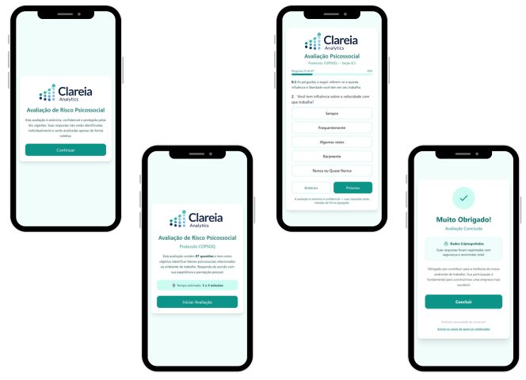
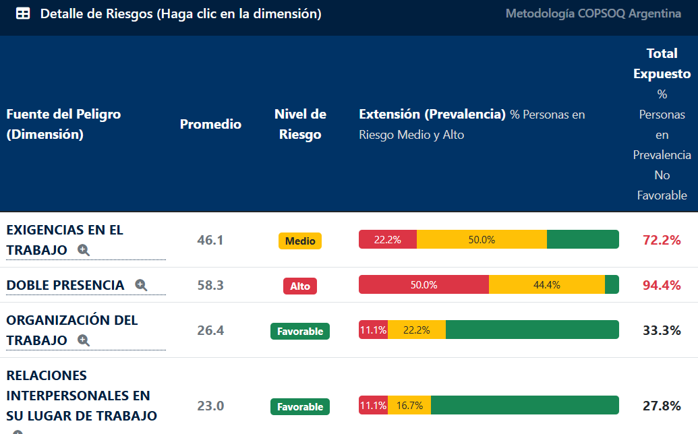
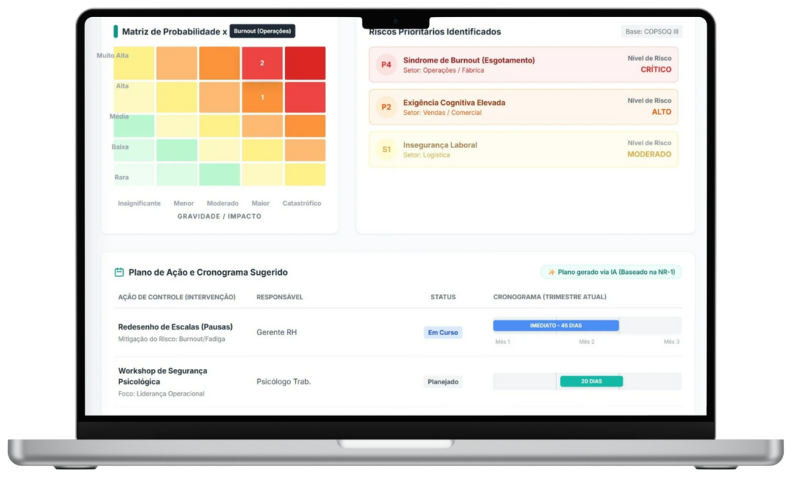

Avaliação de Riscos Psicossociais com Rigor Técnico e Inteligência de Dados
Identificamos, analisamos e documentamos os riscos psicossociais da sua empresa com metodologia baseada em evidências — garantindo conformidade com a NR-01 e segurança jurídica para o PGR.
O que a NR-01 exige sobre riscos psicossociais?
Com a atualização da norma, os riscos psicossociais devem integrar formalmente o Gerenciamento de Riscos Ocupacionais (GRO).
Identificação objetiva
Mapeamento dos fatores de risco psicossocial com instrumentos válidos e confiáveis, sem subjetividade.
Avaliação estruturada
Escalas validadas cientificamente, aplicação anônima e segura, coleta digital com acesso via dispositivos.
Integração ao PGR
Documentação técnica pronta para fiscalização, auditoria e integração ao Programa de Gerenciamento de Riscos.
Onde as empresas costumam errar?
Muitas organizações confundem gestão de risco psicossocial com ações pontuais de bem-estar. A NR-01 exige rigor técnico e documental.
- Confundir gestão de risco com palestras de bem-estar
- Usar questionários sem validação científica
- Gerar relatórios subjetivos sem dados defensáveis em auditoria
Do dado à decisão: nossa metodologia em 3 etapas
Cada etapa garante integridade técnica, anonimato e conformidade regulatória.
Coleta Estruturada
Plataforma digital segura para aplicação de instrumentos psicométricos validados. Acesso via mobile e desktop, com anonimato garantido e escalas validadas cientificamente.
- Acesso via Mobile e Desktop
- Anonimato garantido
- Escalas validadas cientificamente
Análise de Dados e Fatores
Processamento estatístico robusto para identificar prevalência de riscos psicossociais e grupos críticos dentro da organização.
- Matriz de risco por dimensão
- Segmentação por setores e cargos
- Cruzamento de variáveis sociodemográficas
Relatório Técnico para o PGR
Entrega final robusta, estruturada para auditorias e fiscalizações, com gráficos executivos e sugestões de plano de ação.
- Gráficos executivos e evidência técnica
- Pronto para auditorias e fiscalizações
- Sugestões de plano de ação priorizadas
Tecnologia e expertise humana trabalhando juntas
Nossa plataforma digital apoia o processo de coleta e análise, mas a interpretação e o relatório final são conduzidos por psicólogos especializados — garantindo profundidade técnica e sensibilidade clínica.
Plataforma de Coleta de Dados
Interface amigável e acessível via qualquer dispositivo. Os colaboradores respondem com anonimato garantido e a empresa acompanha a adesão em tempo real.
- Interface responsiva (mobile e desktop)
- Anonimato total do respondente
- Painel de acompanhamento para gestores


Dashboard de Análise e Relatórios
Visualize os dados processados em tempo real com gráficos interativos, matrizes de risco e segmentações por setor, cargo e variáveis sociodemográficas.
- Gráficos executivos interativos
- Segmentação múltipla dos dados
- Exportação para relatório técnico
Relatório Técnico — Elaborado por Psicólogos
O relatório final não é gerado automaticamente. Ele é elaborado e assinado por psicólogos especializados, que interpretam os dados com rigor clínico e contextualizam os achados à realidade da sua organização.
- Análise interpretativa por profissional de psicologia
- Contextualização organizacional dos dados
- Sugestões de intervenção baseadas em evidências
- Documento pronto para PGR e auditorias

Tecnologia com toque humano
A plataforma automatiza a coleta e o processamento, mas o olhar clínico de psicólogos especializados é insubstituível na elaboração do relatório final. Acreditamos que dados ganham significado quando interpretados por pessoas capacitadas.
Diferenciais que fazem a diferença
Não somos vendedores de bem-estar. Somos analistas de dados com foco em conformidade e evidências.
Baseado em Evidências
Instrumentos psicométricos cientificamente validados.
Sigilo Total
Anonimato e segurança de dados em todas as etapas.
Conformidade Legal
Relatórios prontos para auditoria e integração ao PGR.
Foco nas Pessoas
Cuidado real com saúde psicológica no trabalho.
Atendemos diferentes contextos organizacionais
Indústrias
Foco na realidade operacional, turnos de trabalho e conformidade rigorosa com normas de segurança.
Serviços
Foco em sobrecarga cognitiva, atendimento ao cliente e dinâmicas interpessoais do ambiente de trabalho.
Saúde
Atenção ao esgotamento emocional, carga de trabalho em turnos e exposição a situações críticas.
Perguntas Frequentes sobre Riscos Psicossociais e NR-01
Riscos psicossociais são fatores do ambiente de trabalho que podem afetar a saúde mental e o bem-estar dos colaboradores. Incluem sobrecarga, conflitos interpessoais, falta de autonomia, assédio, entre outros fatores organizacionais.
Com a atualização da NR-01, os riscos psicossociais passaram a ser obrigatoriamente incluídos no Gerenciamento de Riscos Ocupacionais (GRO). Isso exige identificação, avaliação e documentação formal desses riscos no PGR da empresa.
A avaliação de riscos psicossociais utiliza instrumentos psicométricos validados cientificamente e foca na identificação de fatores de risco ocupacional. Já uma pesquisa de clima é mais ampla e subjetiva, sem a robustez metodológica necessária para conformidade regulatória.
Os dados são coletados de forma anônima por meio da nossa plataforma digital. Os relatórios apresentam resultados agregados, sem possibilidade de identificação individual dos respondentes, garantindo segurança para os colaboradores e para a organização.
O processo completo — da coleta à entrega do relatório técnico — é dimensionado conforme o porte da organização. Para empresas de porte médio, o ciclo típico é concluído em um prazo adequado para atender demandas de conformidade.
Sua empresa precisa estar em conformidade com a NR-01
Fale com especialistas técnicos, não com vendedores. Agende uma conversa sem compromisso e entenda como adequar sua organização.
Agende uma Conversa Técnica